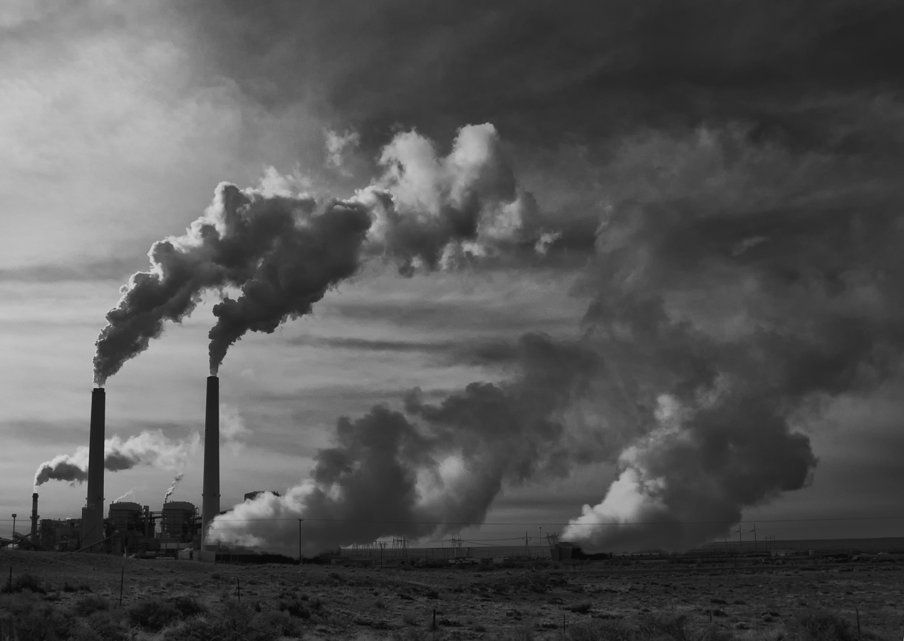

Intro: GreenHouse Gasses
1. There are many types of greenhouse gasses, such as methane, carbon dioxide, nitrous oxide.
2. Greenhouse gasses are trapped inside the atmosphere due to Ozone. However, without ozone, we would be exposed to pure UV Rays.
3. Carbon Dioxide CO2 accounts for 81% of all greenhouse gasses.
Global Warming
1. Global Warming is caused by the build up of greenhouse gasses, due to the sunlight that usually reflects off the surface now becomes reflected back into the ground, creating this heat trap.
2. This heat that is being built up has melted over 46 gigatons of ice every year for the past 10 years. In total, Global Warming melted 184 million olympic sized swimming pools of water.
3. Some species—including mosquitoes, ticks, jellyfish, and crop pests—are thriving. Booming populations of bark beetles that feed on spruce and pine trees have devastated millions of forested acres in the U.S.